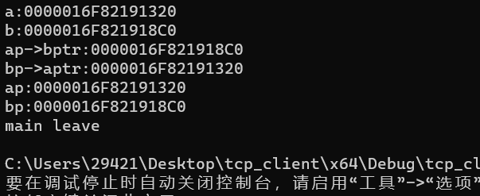
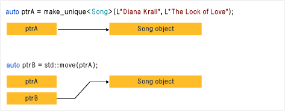
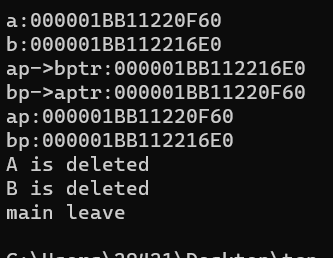
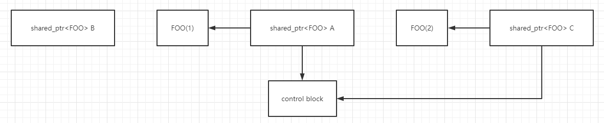
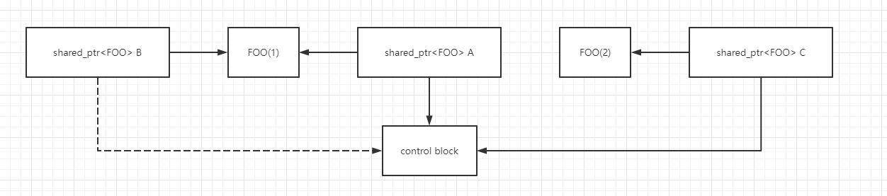

C/C++后端开发基础
前言
这一篇作为C/C++后端开发的前导篇，讲述一些比较基本的东西，比如多线程、网络API、新特性、操作系统、计算机网络、数据结构等等，内容非常琐碎，但对于想涉足后端开发的小伙伴们来讲这些都常见到的，万字长文警告，建议搭配目录食用，话不多说，我们立上开始。
Linux
这一块讲的是linux下一些必须要知道的知识
用户态和内核态
C++
接下来是C++的一些好用的工具，和一些琐碎的知识，建议搭配目录食用。
智能指针
博主一直都认为C/C++有两大经典的特性，一个就是宏定义，另一个就是指针了，指针可以方便我们直接的访问地址，大大的提高了程序的性能，也给C/C++程序员更高的自由度，最常见的操作就是我们经常会用new（malloc）在堆上开辟一段空间，然后通过指针去管理它，虽然指针给我们带来了很多好处但同样指针也给我们带来了一定的问题，就好比刚才，带来自由度的同时，也增加了我们操作的复杂度，我们手动开辟空间后，也需要手动的去释放，但你知道的懒也是科技进步的一大原因，人们都知道一个类在销毁的时候会自动调用析构函数，那么我们只要在析构函数中销毁开辟的内存空间不就可以实现自动嘛，就这样智能指针诞生了。
使用智能指针主要有这么两点好处：
- 使用智能指针可以自动释放占用的内存
- 共享所有权指针的传播和释放，解决了多线程同时析构一个对象的问题
C++中原本有四个智能指针分别是auto_ptr、shared_ptr、unique_ptr、weak_ptr，但auto_ptr在后来被C++11弃用了所以我们也不多介绍，下面我们来简单的介绍一下其余三个指针的特点：
- unique_ptr：独享对象的所有权，由于没有引用计数，所以性能会比较好
- shared_ptr：共享对象的所有权，但性能略微逊色
- weak_ptr：和shared_ptr配合使用，解决循环引用的问题
接下来我们分别详细的介绍一下三个指针：
shared_ptr
我们打乱顺序先来介绍一下shared_ptr，在shared_ptr内部包含两个指针，一个指向对象，一个指向控制块，控制块里最关键的部分就是一个引用计数。

为什么shared_ptr要使用一个引用计数的机制呢？我们刚才说共享指针会共享对象的所有权，也就是可以由多个共享指针指向一个对象，一块内存空间，如果现在我们要销毁一个shared_ptr指针，那么如果它直接就把所指向的内存空间销毁了，那么其他的shared_ptr就没有办法使用了，所以shared_ptr中使用引用计数的方式来解决这个问题，每当有一个shared_ptr指针指向一块相同的地址，那么引用计数就会加1，当所有的shared_ptr都析构了，也就是引用计数归零了，内存才会被释放。我们可以通过shared_ptr的use_count属性看看堆上对象有多少个引用。
知道了shared_ptr的一些内部原理，我们来看看怎么使用吧！最基本的我们可以通过赋值的方法来进行声明，但是要注意的是不可以将原始指针赋值给一个之智能指针，例如：
1 | shared_ptr<int> p1(new int(1)); |
OH！我们好像忘记给一个shared_ptr初始化了，不过没关系，我们还可以通过reset方法来初始化它：
1 | p3.reset(new int(1)); |
当然也要注意当一个shared_ptr有值的时候reset方法会将引用计数减1。
当然我们还有更高效的方法，我们也更推荐使用这种方法make_shared：
1 | auto sp1 = make_shared<int>(100); |
在使用shared_ptr的过程中我们需要取得数据，所以我们需要使用一些函数这里介绍三个：
- get()：返回shared_ptr中指向对象的指针
- use_count()：返回当前引用计数的值
- unique()：若use_count()=1那么返回true，否则返回false
这里要强调的是get()是一个危险的函数，如果你不知道它有多么危险那么请不要调用它。如果你还是需要调用它，那么请遵守以下三个约定：
- 不要保存get函数的返回值，无论是保存为一个普通指针还是一个shared_ptr
- 保存为普通指针不一定什么时候它就会变成空指针了，保存为shared_ptr则产生了独立指针
- 不要delete掉get函数的返回值，那样会出现对一块内存delete两次的错误
接下来比较重要的知识点是指定删除器：
如果用shared_ptr管理非new对象或是没有析构函数的类时，应为其传递一个合适的删除器，我们可以用回调函数或者lambda表达式来实现。例如：
1 |
|
当我们使用shared_ptr管理动态数组的时候，需要指定删除器，因为shared_ptr的默认删除器不支持数组对象，所以我们要指定删除器：
1 | shared_ptr<int>p3(new int[10],[](int *p){ delete []p;}); |
接下来我们再来讲三个在使用shared_ptr过程中需要注意的问题：
1.不要使用一个原始指针初始化多个shared_ptr，因为那样shared_ptr并不会累加计数，这样就会出现一块内存delete两次的错误。
2.不要在函数实参中创建shared_ptr，因为C++的函数参数的计算顺序在不同的编译器不同的约定下，一般是从右到左的，但也可能是左到右，假如有这样的一条代码，那么应该会先进行new int，然后调用g()，万一g()出现了异常，那么new int 就发生内存泄露了，所以要先创建shared_ptr。
1 | function(shared_ptr<int>(new int),g()) |
3.不要将this指针作为shared_ptr返回出来，因为本质上this是一个普通指针，因此可能会导致重复delete的问题。如果我们需要这样做的话，正确做法是让当前类继承于enable_shared_from_this < class>然后使用基类方法shared_from_this()。
最后我们来讨论一下shared_ptr一个比较重要的问题，循环引用和如何避免循环引用。
首先我们来看一下什么是循环引用：
1 |
|
这就是一个典型的循环引用的例子，我们可以运行一下，看看结果：

我们可以看到我们new出来A,B的地址，也可以看到分别有两个指针指向它们，这样的一个循环的结构，就导致了当程序执行完当前程序块后，引用计数并不会归零，自然也不会将我们开辟的空间回收，这就导致了内存泄漏，我们常用的解决办法就是把A或者B里的shared_ptr改为weak_ptr，这个我们等以后再说。
unique_ptr
unique_ptr是一个独占型的智能指针，不能将其赋值给另一个unique_ptr，unique_ptr需要指定删除器的类型。虽然unique_ptr不允许赋值给其他unique_ptr但可以通过函数返回给其他的unique_ptr比如move函数，move函数会将自身的所有权转移给其他指针，执行完move函数后自身便不再拥有所有权了。

unique_ptr的独占的特性，也就导致了它不能直接的被装入任何一个STL容器，不过我们仍然可以通过移动所有权的方式来将它装到容器里面。接下来我们看一下如何声明一个unique_ptr我们可以通过最为普通的方法去声明例如这样：
1 | unique_ptr<T>my_ptr(new T) |
我们可以通过new开辟一块空间然后让my_ptr指向它，但这样做有一个缺点，这违背了软件工程中一个重要原则：应该避免代码的重复，代码的重复会引起编译次数的增加，导致目标代码膨胀，所以C++14就将make_unique加入了标准库：
1 | auto upw1(make_unique<T>(初始化的值)) |
创建好unique_ptr后我们就可以像使用正常指针一样对其解引用等操作了。
unique_ptr删除器的指定和shared_ptr也不一样，unique_ptr在指定删除器的时候也要指定删除器的类型，例如：
1 | unique_ptr<int, void(*)(int*)> ptr4(new int(1), [](int* p) {delete p; }); |
关于shared_ptr和unique_ptr的使用场景是要根据实际应用需求来选择。如果希望只有一个智能指针管理资源或者管理数组就用unique_ptr，如果希望多个智能指针管理同一个资源就用shared_ptr。
weak_ptr
我们之前介绍的shared_ptr已经很好了，但有的时候shared_ptr仍然会导致内存泄漏，就比如我们所说的循环引用问题。weak_ptr是一种不控制对象生命周期的智能指针，它指向一个shared_ptr管理的对象，管理对象内存的还是原先的那个强引用的shared_ptr，weak_ptr只是为管理对象提供了另一个访问手段。weak_ptr设计的目的是为了配合shared_ptr而引入的一种智能指针来协助shared_ptr工作，它只可以从一个shared_ptr或另一个weak_ptr对象构造，它的构造和析构并不会引起引用计数的增加或减少。
还是那个循环引用的例子，我们稍微修改一下再看一下结果：
1 |
|
结果：

看！虽然对象还是互相引用了，但因为其中有一个对象中存放的指针是weak_ptr所以并没有使得循环计数增加，所以也就可以正确的释放内存了。
知道了weak_ptr和shared_ptr之间的配合关系，我们也来看一下三个操作weak_ptr的基本方法：
- use_count()：返回当前引用计数的值
- expired()：可以判断所观察的资源是否已经释放了
- lock()：可以获得所监视\指向的shared_ptr
我们之前在shared_ptr中还提到过不要直接的返回一个this指针，要通过继承enable_shared_from_this类并通过方法shared_from_this来返回一个指针，原因是enable_shared_from_this类中有一个weak_ptr，这个weak_ptr用来观察this指针，调用shared_from_this()就会调用内部weak_ptr的lock方法，将所观察的shared_ptr返回。需要注意的是，获取自身智能指针的函数尽在shared_ptr的构造函数被调用之后才能使用，因为enable_shared_from_this内部的weak_ptr只有通过shared_ptr才能构造。
最后在使用weak_ptr之前我们应该调用一次expired()以保weak_ptr是合法的。
智能指针线程安全的问题
智能指针尤其是shared_ptr，在多线程中有些时候是不安全，我们主要需要考虑这三点：
- 引用计数的加减操作是否线程安全
- 修改shared_ptr指向是否线程安全
- shared_ptr< T>的T的并发操作的安全性
首先是对于引用计数的思考，我们知道shared_ptr有引用计数，这个引用计数被存放在堆上，所以不必担心这个，那每一次增加或者减少引用计数的操作呢？这个也不必担心，因为增加或减少计数这个操作是一个原子操作，所以并不会引发线程安全问题。所以对于引用计数的加减操作是安全的。
之后是对于修改shared_ptr的思考，我们假设一个场景，我们现在有三个shared_ptr分别是A,B,C：
1 | shared_ptr<FOO> A(new FOO); |
现在A,B,C分别在不同的线程中，我们要将A赋值给B，那么最开始会将A中对象的地址赋值给B中指向对象的指针，然后将控制块的地址赋值给B中指向控制块的指针，这两步操作不会一起进行，它们并不是一个原子操作，所以这个时候就有可能引发线程安全的问题，我们可以仔细的看一下到底会发生什么：
最开始A指向FOO(1)，B指向FOO(2)

之后，本来我们是要让B的控制块指针指向控制块的，但不巧的是线程转换到了C上，那么B就没有顺利的连接到控制块。

 wechat
wechat alipay
alipay